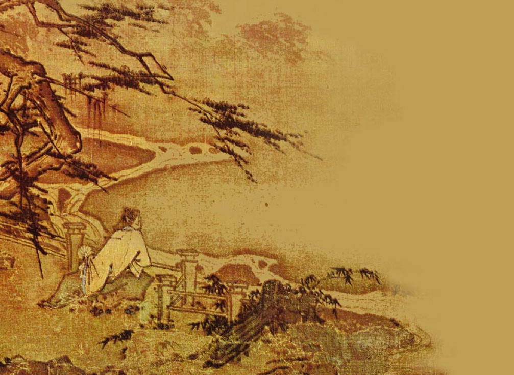
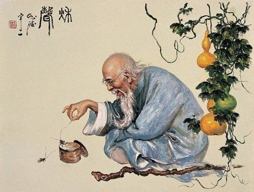
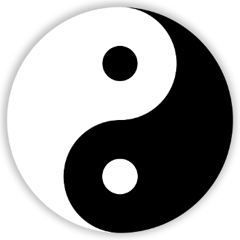
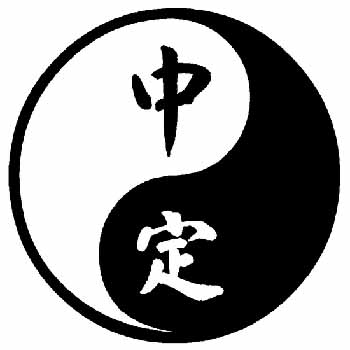

Taoísmo
El taoísmo es un sistema de filosofía de vida basado primordialmente en el Tao Te King que la tradición atribuye al filósofo chino Lao Tsé. Sus enseñanzas parten del concepto de unidad absoluta y al mismo tiempo mutable denominado Tao, que conforma la realidad suprema y el principio cosmológico y ontológico de todas las cosas.
Tao es el nombre global que se da al orden natural. El objetivo del tao es enseñar al hombre a integrarse en la naturaleza, enseñarle a fluir, a integrarse en sí mismo en concordancia y armonía. El tao no es un creador porque nada en el mundo se crea ni el mundo es creado. Enseñar a compenetrarse con esta naturaleza y armonía de tal modo que llegue a experimentar en su propio cuerpo sus ritmos vitales. Sintonizándose el cuerpo humano mediante una serie de ejercicios con estos ritmos, ganando así serenidad mental y energía física.
Observando de la perspectiva del tao, se ve cómo todas las cosas se elevan, se vuelven grandes y luego retornan a su raíz. Vivir y morir es simplemente entrar y salir. Las fuerzas de la mente no tienen poder sobre quien sigue el tao. El camino del no-ser lleva a la quietud y la observación, y conduce de lo múltiple al uno. Para poder recorrer ese camino hace falta preparación interna. Mediante la práctica espiritual, la perseverancia, el recogimiento y el silencio se llega a un estado de relajación que debe ser tan sereno que posibilita la contemplación del ser interior, el alma, y así se logra ver lo invisible, escuchar lo inaudible, sentir lo inalcanzable.
Lao-Tse

Lao-Tse, también llamado Lao Tzu, Lao Zi, Laozi o Laocio (chino simplificado y tradicional: 老子, pinyin: lǎozǐ, literalmente ‘viejo maestro’), es una personalidad china cuya existencia histórica se debate. Se le considera uno de los filósofos más relevantes de la civilización china. La tradición china establece que vivió en el siglo VI a. C., pero muchos eruditos modernos argumentan que puede haber vivido aproximadamente en el siglo IV a. C., durante el período de las Cien escuelas del pensamiento y de los Reinos Combatientes. Se le atribuye haber escrito el Dào Dé Jing (o Tao Te Ching), obra esencial del taoísmo. De acuerdo con este libro, el tao (o dao, ‘camino’) puede verse como el cambio permanente y este es la verdad universal. Dentro de las dudas sobre la existencia de Lao-Tse y sobre la época en la que vivió, se cree que pudo ser contemporáneo de Confucio
A pesar de que en otros casos hay una transmisión impresionante en cuanto a narraciones, crónicas y listas minuciosas de gobernantes, funcionarios y otras personalidades relevantes de la antigua China, sobre Lao Tse no se sabe casi nada. Las fuentes que más tempranamente lo mencionan, lo hacen a través de anécdotas y leyendas, entre ellas, una historia sobre él en la obra de Zhuangzi (Chuang -Tzu) Nan hua zhen jing (南華真經, literalmente: ‘libro verdadero de la florescencia [cultural] del sur’). La primera fuente histórica o biográfica se encuentra en las Memorias históricas de Sima Qian del siglo I a. C.; sin embargo, él mismo escribe que sus fuentes y materiales serían muy inseguros y que ha encontrado afirmaciones muy contradictorias sobre Lao Tse. Por ello, se ha sostenido que no es seguro que Lao Tse haya vivido realmente alguna vez.